Blind Source Separation
Motivation and Problem
Augmented reality in sound is used in hearing aids, surveillance, and other applications. Using the power of sound. Audio has not been as focused on as much as other forms of information, such as image and text. However, there is still much value in audio. -whether that be for journalists in the field recording audio from interviews, in walkie-talkies, or to improve speech to text. The main reason why audio is not used as much for information retrieval is due to the failure of speech to text to convert audio files to text, much of which is due to background noise. intuitively, the BSS problem is: given a mixed signal, how can you extract the original signals? Technically, the BSS problem, can be written as: $$ X = As $$ where s is the original signals, A is the mixing matrix, and X is the mixed signals. The aim is to find W that is the inverse of A $$P = AW$$ is the gauge of how good W is. Ideally, P is I, the identity matrix. However, as the separated sources may not come with the same order and scale as the original sources, the matrix P should ideally be an identity up to a permutation and scale. See the repository with all the code here
What specific problem am I solving?
How do three different paradigms of approaching the blind source separation problem compare qualitatively and quantitatively?- The three paradigms I will tackle focus on different priors:
- ICA - Looking at the independence of the sources and looking at the assumption that mixed signals are more Gaussian than the original.
- Compressive Sensing - Sounds can be represented using basis functions - with the knowledge of these basis functions, reconstruct each signal in the mixed signal.
- Deep Learning - Focuses on the predictability of a signal (can be approximated by a linear combination of their values int he past), focusing on finding parameters in a search space to approximate W.
- 2) Gain domain knowledge
- 1) Be able to generate mixed audio
- 3) How to evaluate?
- 4) Just do it - literature review for all of 3.
- 5) Further things to do.
- Basics of Digital Signal Processing
- Source Separation using Speaker Subspace Modles
- Speech Denoising using Wavelet Techniques http://excedrin.media.mit.edu/wp-content/uploads/sites/10/2013/07/AES99.pdf
How will I mark my progress?
I have absolutely no clue about anything DSP related, and am not sure what the state-of-the-art for BSS is. My goalis to ultimately be able to get all three algorithms working and compare them, but as I am unsure of how mcuh literature is out there, my secondary goal is to know what i need to know further.Steps
Part I: Understanding of crucial concepts in DSP
I had never daelt with digital processing before, so the below is a tour through
domain knowledge
Useful Links and Bcakground
Fourier Transform
First, let us look at the fourier transform
The Fourier transform is able to detect the structure behind signals, stripping them to their sinusoid functions
Here is the fourier transform (both DFT and FFT that I implemented) running on a signal for safety check. The x-axis for post FFT is the frequency and the y is the amplitude.
The fourier transform by itself does not do blind source separation, but it is a crucial transform.
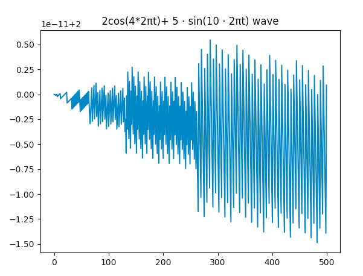
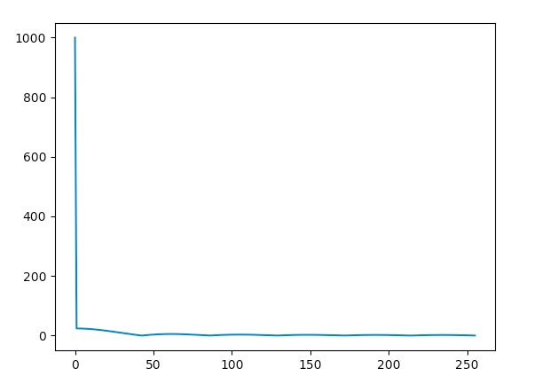
Here is the audio spectrum of the audio file above of the crowded bar.
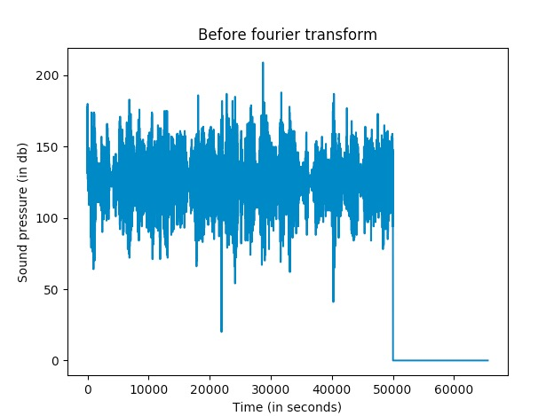
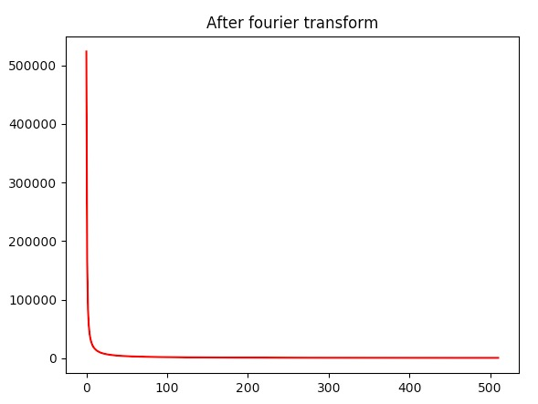
Find the code for FFTs here
BSS Definitions Shortcut
Let us start with some definitions of the types of priors that are looked at when evaluating separability.
-Kurtosis
-Entropy
Audio Mixing
To test, we will be artificially mixing various sound samples. Here, we have two sounds - let us mix them together with this code
Man with threatening voice (Voice 2)
Voice citing poetry (Voice 1)
Mixed Audio (Microphone 1)
Mixed Audio (Microphone 2)
How will I evaluate each algorithm?
I will draw guidelines from this paper, looking at
distortion.
By distortion we mean how the original signals are distorted from the mixed signals in the absence of other source signals.
The equations are below.
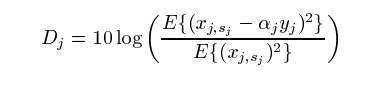
And here is the code
Part III: Multi-source separation implementation + benchmarking
Independent Component Analysis
There is another branch of BSS that has been devleoped on top of ICAs:
https://link.springer.com/chapter/10.1007/11679363_21
There has also been work dealing with creating varioushttp://www.itfrindia.org/ICCIC/Vol2/255ICCIC.pdf
Voice 1 before, mixed, and estimate
Voice 2 before, mixed, and estimated
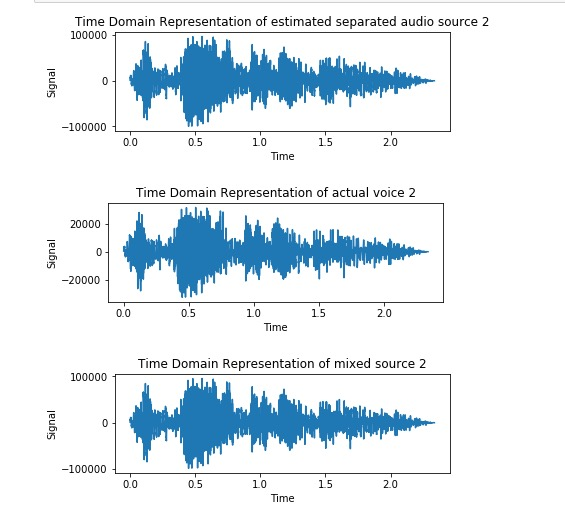
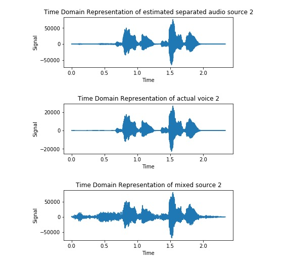>
I implemented FastiCA with logcosh to the problem, implementing the ICA method in this
iPython notebook.
Evaluation
Below are the two audio files after going through ICA with log cosh function.
Estimated source 1
Estimated source 2
Qualitatively, FastICA preformed well for Source A, and not so well with Source B, although it significantly separated both voices.
Distortion for voice 1 is 63.891529805 while voice 2 is 37.458170624.
Deep Learning
AH buzzwords. After doing some literature review (of which there isn't a lot that came up), there hasn't seemed to be an effective way to use deep learning for BSS. However, there are also few articles in general on this subject, so I decided to take a crack at it and implement one of the
papers
here
Here, Sam and I assumed that the algorithm starts at k instead of filling with 0s or wrapping around, and here are the results of the separation.
Estimated Voice 1
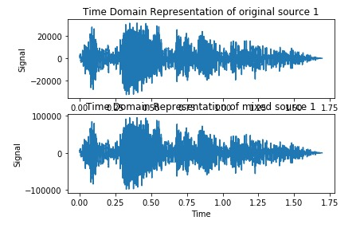
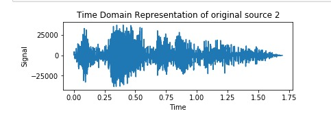
Estimated Voice 2 (which it failed to extract)
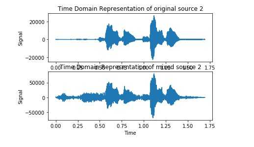
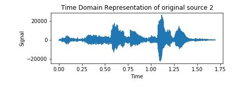
Notes: Simulated annealing could be used instead of back propagation.
Evaluation Deep learning method produced an average distortion of 72.9566240393 for voice 1, and 40.26824952131 for voice 2.
Here is all of my work for the code.
Compression Sensing
Compression sensing (CS) remarkably reduces the amount of sampling needed to restore a signal exactly - instead of sampling at least twice the frequency of a signal, CS depends on the number of non-zero frequencies. It is based on the assumption that audio signals are sparse. Here, the basis used is the Discrete Cosine Transform (DCT), and using L1 norms, we can reconstruct the original signals. The literature review for this. Other than a few papers by Michael Z , who explores Bayesian priors of BSS to tackle the case where we do not know A, there is not as much research with BSS using compressed sensing - most CS papers are on reconstruction of one signal. A whole another question is - how to find the basis functions for each audio stream, especially for human voices? There is one
demo online with CS for BSS, which fails pretty badly for voices
Here are some cool papers:
CS applied wtih ICA
There isn't that much
Here are the results of ocmpression sensing, after modifying it using L1 norm to retrieve more than 1 signal at a time.
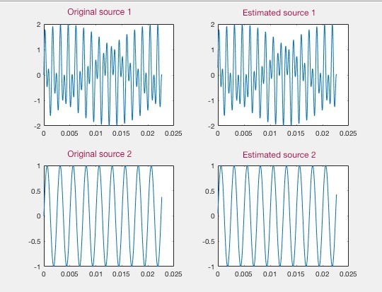
Here is the Matlab code . I also started translating to
Python .
For compression sensing, we must represent audio sources as a combination of basis functions such that

 TThe literature in this field has been in the L1 norm. Here, we use the L1 norm minimization to extract the x, which is the original signals. Here, we use gradient descent.
http://www2.ece.ohio-state.edu/~chi/papers/CompressiveBSS_ICIP2010.pdf
TThe literature in this field has been in the L1 norm. Here, we use the L1 norm minimization to extract the x, which is the original signals. Here, we use gradient descent.
http://www2.ece.ohio-state.edu/~chi/papers/CompressiveBSS_ICIP2010.pdf
Part I: Understanding of crucial concepts in DSP
I had never daelt with digital processing before, so the below is a tour through domain knowledge
- Useful Links and Bcakground
Fourier Transform
First, let us look at the fourier transform
The Fourier transform is able to detect the structure behind signals, stripping them to their sinusoid functions
Here is the fourier transform (both DFT and FFT that I implemented) running on a signal for safety check. The x-axis for post FFT is the frequency and the y is the amplitude.
The fourier transform by itself does not do blind source separation, but it is a crucial transform.
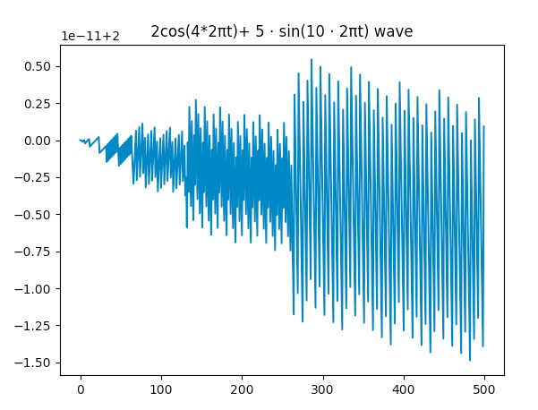 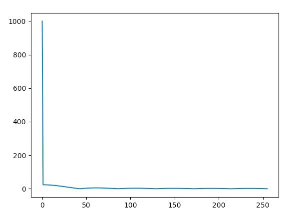Here is the audio spectrum of the audio file above of the crowded bar.
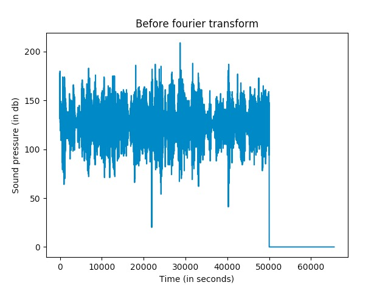 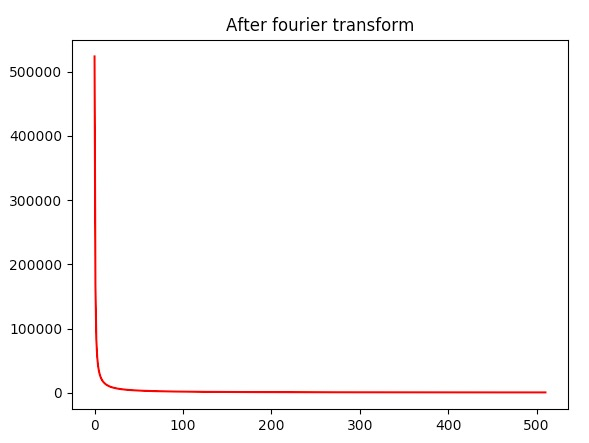Find the code for FFTs here
BSS Definitions Shortcut
Let us start with some definitions of the types of priors that are looked at when evaluating separability. -Kurtosis -Entropy
Audio Mixing
To test, we will be artificially mixing various sound samples. Here, we have two sounds - let us mix them together with this code
Man with threatening voice (Voice 2)
Mixed Audio (Microphone 1)
Mixed Audio (Microphone 2)
How will I evaluate each algorithm?
I will draw guidelines from this paper, looking at distortion. By distortion we mean how the original signals are distorted from the mixed signals in the absence of other source signals. The equations are below.
And here is the code
Part III: Multi-source separation implementation + benchmarking
Independent Component Analysis
There is another branch of BSS that has been devleoped on top of ICAs:
https://link.springer.com/chapter/10.1007/11679363_21
There has also been work dealing with creating varioushttp://www.itfrindia.org/ICCIC/Vol2/255ICCIC.pdf
Voice 1 before, mixed, and estimate Voice 2 before, mixed, and estimated
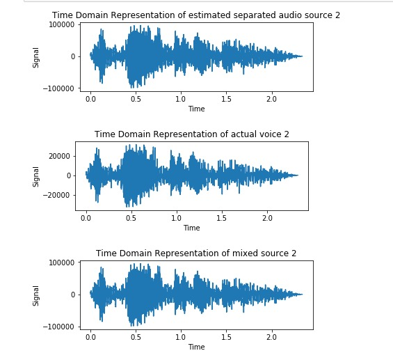Evaluation
Below are the two audio files after going through ICA with log cosh function.Deep Learning
AH buzzwords. After doing some literature review (of which there isn't a lot that came up), there hasn't seemed to be an effective way to use deep learning for BSS. However, there are also few articles in general on this subject, so I decided to take a crack at it and implement one of the papers here Here, Sam and I assumed that the algorithm starts at k instead of filling with 0s or wrapping around, and here are the results of the separation.Estimated Voice 1
Estimated Voice 2 (which it failed to extract)
Notes: Simulated annealing could be used instead of back propagation.
Evaluation Deep learning method produced an average distortion of 72.9566240393 for voice 1, and 40.26824952131 for voice 2. Here is all of my work for the code.Compression Sensing
Compression sensing (CS) remarkably reduces the amount of sampling needed to restore a signal exactly - instead of sampling at least twice the frequency of a signal, CS depends on the number of non-zero frequencies. It is based on the assumption that audio signals are sparse. Here, the basis used is the Discrete Cosine Transform (DCT), and using L1 norms, we can reconstruct the original signals. The literature review for this. Other than a few papers by Michael Z , who explores Bayesian priors of BSS to tackle the case where we do not know A, there is not as much research with BSS using compressed sensing - most CS papers are on reconstruction of one signal. A whole another question is - how to find the basis functions for each audio stream, especially for human voices? There is one demo online with CS for BSS, which fails pretty badly for voices
Here are some cool papers:
CS applied wtih ICA There isn't that muchHere are the results of ocmpression sensing, after modifying it using L1 norm to retrieve more than 1 signal at a time.
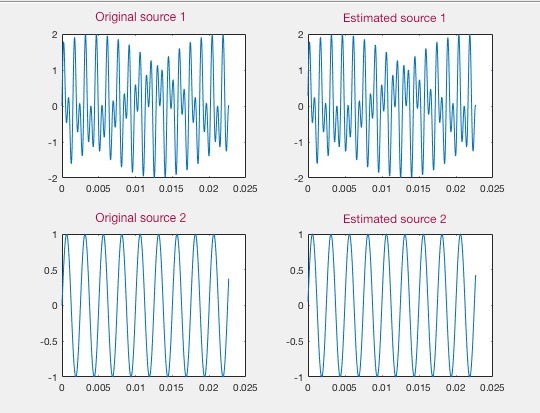Here is the Matlab code . I also started translating to Python .
For compression sensing, we must represent audio sources as a combination of basis functions such that